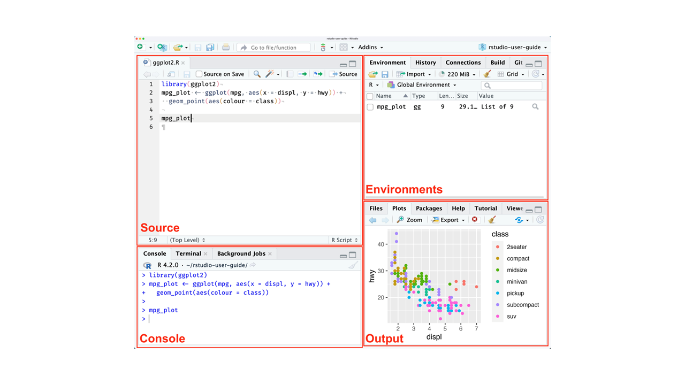

Nesta seção, serão explorados os fundamentos da linguagem R, fundamentais para a manipulação, visualização e análise de dados. Serão abordados os principais conceitos, incluindo:
O R é uma ferramenta poderosa que permite a manipulação, análise e visualização de dados, além de possibilitar o desenvolvimento de scripts simples até programas completos. Trata-se de uma versão de código aberto da linguagem de programação S, criada por John M. Chambers na Stanford University, em colaboração com o Bell Labs durante a década de 1980.
O RStudio é um ambiente de desenvolvimento integrado (IDE) projetado para proporcionar uma experiência mais eficiente e intuitiva ao trabalhar com R. Ele oferece uma interface gráfica que facilita a escrita de código, o gerenciamento de projetos, a depuração e a visualização de resultados em R. Amplamente utilizado por cientistas de dados, estatísticos e desenvolvedores, o RStudio se destaca como uma ferramenta essencial para profissionais que utilizam a linguagem R em suas análises e projetos.

Nesta seção, exploraremos os conceitos fundamentais para compreender o funcionamento da linguagem R e a forma como o RStudio é comumente utilizado no dia a dia para executar atividades e análises.
x <- 15 # Atribui o valor 15 ao objeto 'x'
nome <- "Ana" # Atribui a string "Ana" ao objeto 'nome'install.packages("ggplot2") # Instala o pacote
library(ggplot2) # Carrega o pacotesoma <- sum(c(1, 2, 3, 4, 5))
media <- mean(c(5, 10, 15))
minha_funcao <- function(a, b) {
return(a + b)
}
resultado <- minha_funcao(3, 5)
# Condicionais
x <- 5
if (x > 3) {
print("Maior que 3")
} else {
print("Menor ou igual a 3")
}
# Loop for
for (i in 1:5) {
print(i)
}
# Loop while
contador <- 1
while (contador <= 5) {
print(contador)
contador <- contador + 1
}numeros <- c(1, 2, 3, 4, 5)matriz <- matrix(1:6, nrow=2, ncol=3)df <- data.frame(Nome=c("Ana", "Bruno"), Idade=c(23, 35))lista <- list(nome="Ana", idade=23, notas=c(8.5, 9.0))library(dplyr)
df %>%
filter(Idade > 30) %>%
arrange(Idade)library(ggplot2)
ggplot(mtcars, aes(x=mpg, y=hp)) +
geom_point() +
labs(title="Relação entre MPG e HP")Na próxima seção, você aprenderá a integrar o R ao Power BI. Aproveite seus estudos!